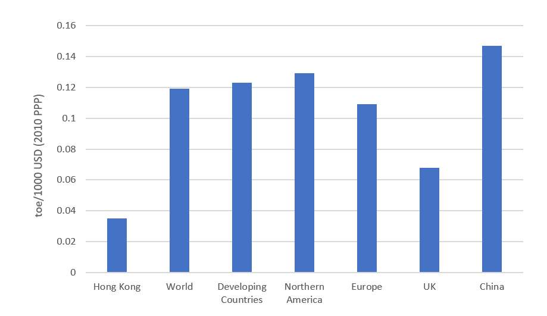

Word Count: 1998
Like many cities around the world, Hong Kong faces various threats from climate change including heat stress, extreme weather events,
flooding and drought (Cheung and Hart, 2012; Welford, 2008). In order to address these risks, the Environment Bureau of Hong Kong
published the Climate Action Plan 2030+ (2017), laying out a roadmap to 2030 for mitigation of the effects of climate change and adaptation.
One key focus of the report is electricity and energy generation, which is logical since 70% of their greenhouse gas (GHG) emissions originate
from electricity production (Hong Kong Gov, 2017). In order to limit GHGs, the city aims to reach net zero by 2100, with a broad target of
40-70% reduction of 2010 GHG emissions by 2050 (Hong Kong Gov, 2017). This could be seen as lacklustre, with other countries targeting net
zero by 2050, and many having legislation proposed or in place (ECIU, 2020), however Hong Kong faces various challenges in its road to decarbonising.
This reviews the context surrounding how the city is addressing its route to reducing GHG emissions, and why there is such a heavy focus on
improving efficiencies.
My Role: Researcher
Hong Kong is a subtropical coastal city, with the region covering 1106 km2. It is home to 7,482,000 people, and has a GDP US$338 billion (Hong Kong Gov, 2021). Although the population density isn’t one of the highest at 6,750 person/km2, Hong Kong is the city with the greatest number of skyscrapers in the world, with 6 buildings over 300m tall, 84 buildings over 200m, and 482 over 150m (CTBUH, 2021). In the post-war period, Hong Kong saw rapid development and became one of the fastest growing global economies (Chung et al., 2018). As the city developed, it became highly commercialised, with over 93.4% of its GDP originating from commercial services with the remaining falling under industry in 2020 (Hong Kong Gov, 2021). This is exemplified in how the sectoral energy consumption has evolved over the past two decades (Fig. 1), where absolute energy consumption has halved for industry, whilst commercial and public services have increased by 2.5 times, and residential consumption has doubled (IEA, 2021). Energy consumption per capita has also increased considerably over this development period (Fig. 2), and could potentially rise further under a warmer future climate, with an increase of almost 10% in energy demand for residential sector and 3% in commercial sectors (Fung et al., 2006).
Figure 1: Sectoral energy consumption in Hong Kong, measured in kilo-tonnes of oil equivalent (IEA, 2021)
Figure 2: Historic electricity consumption per capita in Hong Kong (IEA, 2021)
Historically, this demand was met primarily with coal and oil, with natural gas introduced in the late 1990s (Fig. 3). Hong Kong’s current ambition is to phase out coal and replace it with more natural gas (Fig. 4). Natural gas can emit approximately half the GHG emissions per kWh generated when compared with coal (Agrawal et al., 2013). Although this GHG/kWh efficiency gain has been scrutinised, as it is thought that methane leakage from natural gas infrastructure could eliminate the GHG reductions (Lenox and Kaplan, 2016; Lelieveld, 2005; Alvarez et al., 2012; Pandey et al., 2019), however, there are other benefits to the use of natural gas over coal such as reduction in pollutants (PM2.5, CO, NOx, CH4), reduction in mortality rates and increases in agricultural yield (Zhao et al., 2018; Wang et al., 2020; Burney, 2020).
Figure 3: The breakdown of electricity generated within Hong Kong by fuel type (IEA, 2021)
Figure 4: The Hong Kong Government’s tentative plan to reduce coal consumption by utilising more natural gas, and expanding non-fossil fuel sources where possible (Hong Kong Gov, 2017)
The heavy focus on natural gas could be due to Hong Kong’s limited potential for local renewable energy generation. Currently, renewable energy makes up <
1% of electricity consumed, consisting of wind, solar and waste to energy (WTE) systems (IEA, 2021). The Hong Kong government estimates that only 3-4% of
their energy demand could be met by these renewable technologies by 2030 (Hong Kong Gov, 2017). In the Climate Action Report, they cite barriers such as
intermittent output of renewable energy, with issues such as “cloudy days, or where panels are occasionally shaded”, as well as the “considerably more
expensive cost” over natural gas (Hong Kong Gov, 2017). Despite the limited plans to harness wind power, there have been numerous studies identifying
sites around Hong Kong for installations, both offshore and on land (Gao et al., 2014; Shu et al., 2015; Lu and Yang, 2001; Shu et al., 2015) as well as
systematic approaches to make it more cost competitive (Sun et al., 2019; He et al., 2020). Photovoltaic (PV) solar panels are also limited in their current
application, with the majority of installations being small scale additions to existing buildings (Hong Kong Gov, 2017). Studies on the feasibility of
PVs generally find that there is a lack of incentives, legislation, regulation and subsidies for the use of solar panels (Zhang et al., 2012; Ngar-yin
Mah et al., 2018), highlighting a potential lack of engagement with PV usage from the government. Although not ruling out solar generation entirely,
the government highlights potential routes to utilise space on tall buildings (Hui et al., 2017; Lu and Yang, 2010; Zhang et al., 2017). Whilst this
may help alleviate the high future energy demand, it is unclear how much of a part they would place at city-wide reductions.
The majority of Hong Kong’s non-fossil fuel electricity is imported from the Daya Bay nuclear energy plant in Shenzhen, providing almost a quarter of
all of Hong Kong’s consumed energy (Dou et al., 2021). Nuclear energy is generally perceived as being effective in reducing GHG emissions, although the
long-term benefits may favour renewable energy generation (Jin and Kim, 2018). Furthermore, there can be challenges surrounding the perception of nuclear
power plants, largely focused on the risks involved following previous disasters (De Groot and Steg, 2010; Stoutenborough et al., 2013; Ho et al., 2018).
This is true for Hong Kong too, where the nuclear energy policies are seen as controversial by residents (Kwok et al., 2017; Ngar-yin Mah et al., 2014).
The current arrangement for imported electricity is due to expire in 2024, and there are currently no plans in place to renew it (Hong Kong Gov, 2017).
The tenuous relationship between Hong Kong and mainland China also draws into question how much the region can rely on Chinese imports, particularly as
further cooperation with mainland China is viewed as an unpopular option (Holley and Lecavalier, 2017).
Given these challenges, Hong Kong’s aspiration is to phase out coal entirely, replace it with renewables where possible and otherwise natural gas (Fig. 4).
There have been no new coal plants built since 1997, and since 1996, 10 natural gas fuelled stations have been constructed, with further developments
citing improved efficiencies (Hong Kong Gov, 2017). Although there are various programs in place to study sites for renewable energy, there are currently
no planned large-scale developments.
Given the outlined challenges on generation and importation of energy, Hong Kong’s Climate Action Plan also highlights the efficiency of buildings and infrastructure. In 2017, 63% of GHG emissions came from electricity generated for buildings (Hong Kong Gov, 2017). Alongside the Climate Action Plan, Hong Kong’s Environmental Bureau published the Energy Saving Plan in 2015, which is a report on reducing the energy intensity of the built environment. The main goal of this plan was to reduce energy intensity by 40% by 2025, using 2005 as a baseline (Hong Kong Gov, 2015). The definition of energy intensity is given as energy demand per $ GDP. As a result, although GHG emissions have increased, and energy consumption in total and per capita has increased, the energy intensity for Hong Kong has decreased as per their target, largely due to the doubling of GDP over the past 15 years (World Data Bank, 2021). As a metric, Hong Kong’s energy intensity performs better than a number of other countries, partially due to its density and rapid commercialisation (Fig. 5).
 Figure 5: Energy intensity of Hong Kong in comparison to other regions and countries, measured as tonnes of oil equivalent, per 1000 US dollars using 2010 purchasing power parity (IEA, 2021)
The routes to achieving energy reductions generally focus on broad scale strategies: educating the public, supporting communities to be more energy
efficient and increasing the frequency of reviews of key energy standards such as the Buildings Energy Efficiency Ordinance – BEEO (Hong Kong Gov, 2015).
The plan has more specific goals too, such as achieving a 5% electricity usage reduction in government buildings by 2020 (with 2014 as a baseline), and the
requirement of new government buildings to achieve BEAM Plus Gold, the second highest award for a commercialised sustainability accreditation scheme for
buildings in Hong Kong (Hong Kong Gov, 2015). However, as a whole, the report focuses mostly on historic and current energy use in Hong Kong, with much smaller
portions laying foundations for clear energy reduction strategies and targets. In the conclusion, the report admits that the 40% reduction target “is less
than what some advocates have called for but this level of reduction is not without ambition. Our assessment is the public has the capacity to take
responsibility to save energy but has yet to take greater action.” It’s indicative of a more passive stance from the government to achieving reductions
in the private sector, opting to impose stricter regulations primarily on governmental and public buildings, whilst relying on existing regulations
(e.g., BEEO) to incrementally improve the private sector. Historically this approach has seen successful improvements in building efficiencies, with
a number of developments operating with improved energy use from 2004-2013 (Jia and Lee, 2018). The main drivers for these changes were attributed to
various government policies, including the energy standards, and the BEAM accreditation.
The Climate Action Plan builds upon this foundation, advocating various strategies to reduce energy consumption in buildings, such as greater
transparency of energy usage through declaration in a centralised database. This transparency has the potential to increase competitivity between
building owners, to achieve greater energy efficiency (Mol, 2015). They also continue to highlight the importance of public engagement, to improve
the knowledge of builders and owners, and encourage the use of more efficient systems such as Fresh Water-Cooling Towers, which have proven efficacy
in reducing energy consumption (Jia and Lee, 2018).
Another benefit of improving energy efficiency is that the improvements are generally passed directly to the tenant or building owner in the form of cost
savings: whilst some may be indiscriminate to how their electricity is produced, being able to achieve financial savings due to reduced consumption could
be a more palatable approach for the highly commercialised sectors. Studies have found that generally there is a cost benefit when looking at the lifecycle
impacts of energy efficiency focused technologies for new buildings (Clinch and Healy, 2001; Chan and Yeung, 2005; Liu et al., 2014) and retrofit
(Mahlia et al., 2005; Liu et al, 2018).
Hong Kong faces many challenges on its road to decarbonising electricity. Although there has been criticism for a lack of engagement on renewables, the
limited land availability poses real barriers to utilising these technologies at large scale, and as such there is a reliance on imported energy to
make up large portions of non-fossil fuel sources. However, the mostly nuclear based import has an uncertain future too, so whilst the city moves away
from reliance on coal and shifts to natural gas, further steps are required to secure lower carbon energy sources.
Planning and guidance also focuses on improving the energy efficiencies of buildings. Targets have been set for reductions and efficiency standards
for public buildings, with a broader goal of 40% reduction in energy intensity for the city as a whole. However the use of energy intensity can be
misleading, affording growing energy consumption, as long as GDP continues to rise. Furthermore, the lack of stricter targets in the private sector
could prove to be another barrier. Whilst energy efficiencies in buildings have generally improved in the city over the past decades, it’s unclear
how much this contributes to broader goals. The government seems cautious of overregulating the dominant commercial sector, instead opting for a
cautious approach to encourage more efficient buildings through public support and incremental improvements in energy standards, thus preserving the
economic growth in a city that has seen accelerated commercialisation. Whilst the plans in place should help reduce future GHG emissions, it is
unclear whether they will be enough to help limit global temperature increase.
Agrawal, K.Kr., Jain, S., Jain, A.Kr. and Dahiya, S. (2013). Assessment of greenhouse gas emissions from coal and natural gas thermal power plants using life cycle approach. International Journal of Environmental Science and Technology, 11(4), pp.1157–1164.
Alvarez, R.A., Pacala, S.W., Winebrake, J.J., Chameides, W.L. and Hamburg, S.P. (2012). Greater focus needed on methane leakage from natural gas infrastructure. Proceedings of the National Academy of Sciences, 109(17), pp.6435–6440.
Burney, J.A. (2020). The downstream air pollution impacts of the transition from coal to natural gas in the United States. Nature Sustainability.
Chan, A.T. and Yeung, V.C.H. (2005). Implementing building energy codes in Hong Kong: energy savings, environmental impacts and cost. Energy and Buildings, 37(6), pp.631–642.
Cheung, C.S.C. and Hart, M.A. (2012). Climate change and thermal comfort in Hong Kong. International Journal of Biometeorology, 58(2), pp.137–148.
Chung, R.Y., Lai, F.T.T., Chung, G.K.K., Yip, B.H.K., Wong, S.Y.S. and Yeoh, E.K. (2018). Socioeconomic disparity in mortality risks widened across generations during rapid economic development in Hong Kong: an age-period-cohort analysis from 1976 to 2010. Annals of Epidemiology, 28(11), pp.743-752.e4.
Clinch, J.Peter. and Healy, J.D. (2001). Cost-benefit analysis of domestic energy efficiency. Energy Policy, 29(2), pp.113–124.
Council on Tall Buildings and Urban Habitats (2021). Number of 150m+ Completed Buildings - The Skyscraper Center. [online] Skyscrapercenter.com. Available at: https://www.skyscrapercenter.com/cities [Accessed 2 Apr. 2021].
De Groot, J.I.M. and Steg, L. (2010). Morality and Nuclear Energy: Perceptions of Risks and Benefits, Personal Norms, and Willingness to Take Action Related to Nuclear Energy. Risk Analysis, 30(9), pp.1363–1373.
Dou, X., Deng, Z., Sun, T., Ke, P., Zhu, B., Shan, Y. and Liu, Z. (2021). Global and local carbon footprints of city of Hong Kong and Macao from 2000 to 2015. Resources, Conservation and Recycling, 164, p.105167.
ECIU (2020). Net Zero Tracker. [online] Energy & Climate Intelligence Unit. Available at: https://eciu.net/netzerotracker.
FUNG, W., LAM, K., HUNG, W., PANG, S. and LEE, Y. (2006). Impact of urban temperature on energy consumption of Hong Kong. Energy, 31(14), pp.2623–2637.
Gao, X., Yang, H. and Lu, L. (2014). Study on offshore wind power potential and wind farm optimization in Hong Kong. Applied Energy, 130, pp.519–531.
He, J., Chan, P.W., Li, Q. and Lee, C.W. (2020). Spatiotemporal analysis of offshore wind field characteristics and energy potential in Hong Kong. Energy, 201, p.117622.
Ho, S.S., Looi, J., Chuah, A.S.F., Leong, A.D. and Pang, N. (2018). “I can live with nuclear energy if…”: Exploring public perceptions of nuclear energy in Singapore. Energy Policy, 120, pp.436–447.
Holley, C. and Lecavalier, E. (2017). Energy governance, energy security and environmental sustainability: A case study from Hong Kong. Energy Policy, 108, pp.379–389.
Hong Kong Goverment (2021). Census and Statistics Department. [online] Censtatd.gov.hk. Available at: https://www.censtatd.gov.hk [Accessed 2 Apr. 2021].
International Energy Agency (2021). Hong Kong - Countries & Regions. [online] IEA. Available at: https://www.iea.org/countries/hong-kong [Accessed 5 Apr. 2021].
Jia, J. and Lee, W.L. (2018). The rising energy efficiency of office buildings in Hong Kong. Energy and Buildings, 166, pp.296–304.
Jin, T. and Kim, J. (2018). What is better for mitigating carbon emissions – Renewable energy or nuclear energy? A panel data analysis. Renewable and Sustainable Energy Reviews, 91, pp.464–471.
Kwok, T.F., Yeung, C.H. and Xu, Y. (2017). Swaying public opinion on nuclear energy: A field experiment in Hong Kong. Utilities Policy, 46, pp.48–57.
Lelieveld, J., Lechtenböhmer, S., Assonov, S.S., Brenninkmeijer, C.A.M., Dienst, C., Fischedick, M. and Hanke, T. (2005). Low methane leakage from gas pipelines. Nature, 434(7035), pp.841–842.
Lenox, C. and Kaplan, P.O. (2016). Role of natural gas in meeting an electric sector emissions reduction strategy and effects on greenhouse gas emissions. Energy Economics, 60, pp.460–468.
Liu, Y., Guo, X. and Hu, F. (2014). Cost-benefit analysis on green building energy efficiency technology application: A case in China. Energy and Buildings, 82, pp.37–46.
Liu, Y., Liu, T., Ye, S. and Liu, Y. (2018). Cost-benefit analysis for Energy Efficiency Retrofit of existing buildings: A case study in China. Journal of Cleaner Production, 177, pp.493–506.
Long, H., Chow, T.-T. and Ji, J. (2017). Building-integrated heat pipe photovoltaic/thermal system for use in Hong Kong. Solar Energy, 155, pp.1084–1091.
Lu, L. and Yang, H. (2001). Wind Data Analysis and a Case Study of Wind Power Generation in Hong Kong. Wind Engineering, 25(2), pp.115–123.
Lu, L. and Yang, H.X. (2010). Environmental payback time analysis of a roof-mounted building-integrated photovoltaic (BIPV) system in Hong Kong. Applied Energy, 87(12), pp.3625–3631.
Mah, D.N., Wang, G., Lo, K., Leung, M.K.H., Hills, P. and Lo, A.Y. (2018). Barriers and policy enablers for solar photovoltaics (PV) in cities: Perspectives of potential adopters in Hong Kong. Renewable and Sustainable Energy Reviews, 92, pp.921–936.
Mahlia, T.M.I., Said, M.F.M., Masjuki, H.H. and Tamjis, M.R. (2005). Cost-benefit analysis and emission reduction of lighting retrofits in residential sector. Energy and Buildings, 37(6), pp.573–578.
Mol, A.P.J. (2015). Transparency and value chain sustainability. Journal of Cleaner Production, 107, pp.154–161.
Pandey, S., Gautam, R., Houweling, S., van der Gon, H.D., Sadavarte, P., Borsdorff, T., Hasekamp, O., Landgraf, J., Tol, P., van Kempen, T., Hoogeveen, R., van Hees, R., Hamburg, S.P., Maasakkers, J.D. and Aben, I. (2019). Satellite observations reveal extreme methane leakage from a natural gas well blowout. Proceedings of the National Academy of Sciences, 116(52), pp.26376–26381.
Shu, Z.R., Li, Q.S. and Chan, P.W. (2015a). Investigation of offshore wind energy potential in Hong Kong based on Weibull distribution function. Applied Energy, 156, pp.362–373.
Shu, Z.R., Li, Q.S. and Chan, P.W. (2015b). Statistical analysis of wind characteristics and wind energy potential in Hong Kong. Energy Conversion and Management, 101, pp.644–657.
Stoutenborough, J.W., Sturgess, S.G. and Vedlitz, A. (2013). Knowledge, risk, and policy support: Public perceptions of nuclear power. Energy Policy, 62, pp.176–184.
Sun, H., Gao, X. and Yang, H. (2019). Investigation into offshore wind farm repowering optimization in Hong Kong. International Journal of Low-Carbon Technologies, 14(2), pp.302–311.
Wang, S., Su, H., Chen, C., Tao, W., Streets, D.G., Lu, Z., Zheng, B., Carmichael, G.R., Lelieveld, J., Pöschl, U. and Cheng, Y. (2020). Natural gas shortages during the “coal-to-gas” transition in China have caused a large redistribution of air pollution in winter 2017. Proceedings of the National Academy of Sciences, 117(49), pp.31018–31025.
Welford, R. (2008). Climate Change Challenges for Hong Kong: An Agenda for Adaptation.
Zhang, W., Lu, L. and Peng, J. (2017). Evaluation of potential benefits of solar photovoltaic shadings in Hong Kong. Energy, 137, pp.1152–1158.
Zhang, X., Shen, L. and Chan, S.Y. (2012). The diffusion of solar energy use in HK: What are the barriers? Energy Policy, 41, pp.241–249.
Zhao, N., Zhang, Y., Li, B., Hao, J., Chen, D., Zhou, Y. and Dong, R. (2018). Natural gas and electricity: Two perspective technologies of substituting coal-burning stoves for rural heating and cooking in Hebei Province of China. Energy Science & Engineering, 7(1), pp.120–131.
Zhu, R., You, L., Santi, P., Wong, M.S. and Ratti, C. (2019). Solar accessibility in developing cities: A case study in Kowloon East, Hong Kong. Sustainable Cities and Society, 51, p.101738.